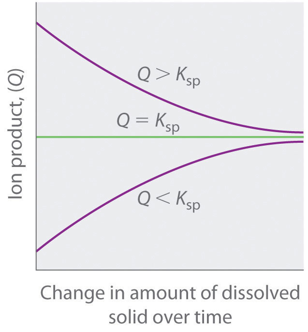

We begin our discussion of solubility and complexation equilibriums—those associated with the formation of complex ions—by developing quantitative methods for describing dissolution and precipitation reactions of ionic compounds in aqueous solution. Just as with acid–base equilibriums, we can describe the concentrations of ions in equilibrium with an ionic solid using an equilibrium constant expression.
When a slightly soluble ionic compound is added to water, some of it dissolves to form a solution, establishing an equilibrium between the pure solid and a solution of its ions. For the dissolution of calcium phosphate, one of the two main components of kidney stones, the equilibrium can be written as follows, with the solid salt on the left:As you will discover in Section 17.4 "Solubility and pH" and in more advanced chemistry courses, basic anions, such as S2−, PO43−, and CO32−, react with water to produce OH− and the corresponding protonated anion. Consequently, their calculated molarities, assuming no protonation in aqueous solution, are only approximate.
Equation 17.1
The equilibrium constant for the dissolution of a sparingly soluble salt is the solubility product (Ksp)The equilibrium constant expression for the dissolution of a sparingly soluble salt that includes the concentration of a pure solid, which is a constant. of the salt. Because the concentration of a pure solid such as Ca3(PO4)2 is a constant, it does not appear explicitly in the equilibrium constant expression. (For more information on the equilibrium constant expression, see Chapter 15 "Chemical Equilibrium", Section 15.2 "The Equilibrium Constant".) The equilibrium constant expression for the dissolution of calcium phosphate is therefore
Equation 17.2
At 25°C and pH 7.00, Ksp for calcium phosphate is 2.07 × 10−33, indicating that the concentrations of Ca2+ and PO43− ions in solution that are in equilibrium with solid calcium phosphate are very low. The values of Ksp for some common salts are listed in Table 17.1 "Solubility Products for Selected Ionic Substances at 25°C"; they show that the magnitude of Ksp varies dramatically for different compounds. Although Ksp is not a function of pH in Equation 17.1, changes in pH can affect the solubility of a compound, as you will discover in Section 17.4 "Solubility and pH".
As with K, the concentration of a pure solid does not appear explicitly in Ksp.
Table 17.1 Solubility Products for Selected Ionic Substances at 25°C
| Solid | Color | K sp | Solid | Color | K sp | |
|---|---|---|---|---|---|---|
| Acetates | Iodides | |||||
| Ca(O2CCH3)2·3H2O | white | 4 × 10−3 | Hg2I2* | yellow | 5.2 × 10−29 | |
| Bromides | PbI2 | yellow | 9.8 × 10−9 | |||
| AgBr | off-white | 5.35 × 10−13 | Oxalates | |||
| Hg2Br2* | yellow | 6.40 × 10−23 | Ag2C2O4 | white | 5.40 × 10−12 | |
| Carbonates | MgC2O4·2H2O | white | 4.83 × 10−6 | |||
| CaCO3 | white | 3.36 × 10−9 | PbC2O4 | white | 4.8 × 10−10 | |
| PbCO3 | white | 7.40 × 10−14 | Phosphates | |||
| Chlorides | Ag3PO4 | white | 8.89 × 10−17 | |||
| AgCl | white | 1.77 × 10−10 | Sr3(PO4)2 | white | 4.0 × 10−28 | |
| Hg2Cl2* | white | 1.43 × 10−18 | FePO4·2H2O | pink | 9.91 × 10−16 | |
| PbCl2 | white | 1.70 × 10−5 | Sulfates | |||
| Chromates | Ag2SO4 | white | 1.20 × 10−5 | |||
| CaCrO4 | yellow | 7.1 × 10−4 | BaSO4 | white | 1.08 × 10−10 | |
| PbCrO4 | yellow | 2.8 × 10−13 | PbSO4 | white | 2.53 × 10−8 | |
| Fluorides | Sulfides | |||||
| BaF2 | white | 1.84 × 10−7 | Ag2S | black | 6.3 × 10−50 | |
| PbF2 | white | 3.3 × 10−8 | CdS | yellow | 8.0 × 10−27 | |
| Hydroxides | PbS | black | 8.0 × 10−28 | |||
| Ca(OH)2 | white | 5.02 × 10−6 | ZnS | white | 1.6 × 10−24 | |
| Cu(OH)2 | pale blue | 1 × 10−14 | ||||
| Mn(OH)2 | light pink | 1.9 × 10−13 | ||||
| Cr(OH)3 | gray-green | 6.3 × 10−31 | ||||
| Fe(OH)3 | rust red | 2.79 × 10−39 | ||||
| *These contain the Hg22+ ion. | ||||||
Solubility products are determined experimentally by directly measuring either the concentration of one of the component ions or the solubility of the compound in a given amount of water. However, whereas solubility is usually expressed in terms of mass of solute per 100 mL of solvent, Ksp, like K, is defined in terms of the molar concentrations of the component ions.
Calcium oxalate monohydrate [Ca(O2CCO2)·H2O, also written as CaC2O4·H2O] is a sparingly soluble salt that is the other major component of kidney stones [along with Ca3(PO4)2]. Its solubility in water at 25°C is 7.36 × 10−4 g/100 mL. Calculate its Ksp.
Given: solubility in g/100 mL
Asked for: K sp
Strategy:
A Write the balanced dissolution equilibrium and the corresponding solubility product expression.
B Convert the solubility of the salt to moles per liter. From the balanced dissolution equilibrium, determine the equilibrium concentrations of the dissolved solute ions. Substitute these values into the solubility product expression to calculate Ksp.
Solution:
A We need to write the solubility product expression in terms of the concentrations of the component ions. For calcium oxalate monohydrate, the balanced dissolution equilibrium and the solubility product expression (abbreviating oxalate as ox2−) are as follows:
Neither solid calcium oxalate monohydrate nor water appears in the solubility product expression because their concentrations are essentially constant.
B Next we need to determine [Ca2+] and [ox2−] at equilibrium. We can use the mass of calcium oxalate monohydrate that dissolves in 100 mL of water to calculate the number of moles that dissolve in 100 mL of water. From this we can determine the number of moles that dissolve in 1.00 L of water. For dilute solutions, the density of the solution is nearly the same as that of water, so dissolving the salt in 1.00 L of water gives essentially 1.00 L of solution. Because each 1 mol of dissolved calcium oxalate monohydrate dissociates to produce 1 mol of calcium ions and 1 mol of oxalate ions, we can obtain the equilibrium concentrations that must be inserted into the solubility product expression. The number of moles of calcium oxalate monohydrate that dissolve in 100 mL of water is as follows:
The number of moles of calcium oxalate monohydrate that dissolve in 1.00 L of the saturated solution is as follows:
Because of the stoichiometry of the reaction, the concentration of Ca2+ and ox2− ions are both 5.04 × 10−5 M. Inserting these values into the solubility product expression,
In our calculation, we have ignored the reaction of the weakly basic anion with water, which tends to make the actual solubility of many salts greater than the calculated value.
Exercise
One crystalline form of calcium carbonate (CaCO3) is the mineral sold as “calcite” in mineral and gem shops. The solubility of calcite in water is 0.67 mg/100 mL. Calculate its Ksp.
Answer: 4.5 × 10−9
The reaction of weakly basic anions with H2O tends to make the actual solubility of many salts higher than predicted.

A crystal of calcite (CaCO3), illustrating the phenomenon of double refraction. When a transparent crystal of calcite is placed over a page, we see two images of the letters.
Calcite, a structural material for many organisms, is found in the teeth of sea urchins. The urchins create depressions in limestone that they can settle in by grinding the rock with their teeth. Limestone, however, also consists of calcite, so how can the urchins grind the rock without also grinding their teeth? Researchers have discovered that the teeth are shaped like needles and plates and contain magnesium. The concentration of magnesium increases toward the tip, which contributes to the hardness. Moreover, each tooth is composed of two blocks of the polycrystalline calcite matrix that are interleaved near the tip. This creates a corrugated surface that presumably increases grinding efficiency. Toolmakers are particularly interested in this approach to grinding.
Tabulated values of Ksp can also be used to estimate the solubility of a salt with a procedure that is essentially the reverse of the one used in Example 1. In this case, we treat the problem as a typical equilibrium problem and set up a table of initial concentrations, changes in concentration, and final concentrations as we did in Chapter 15 "Chemical Equilibrium", remembering that the concentration of the pure solid is essentially constant.
We saw that the Ksp for Ca3(PO4)2 is 2.07 × 10−33 at 25°C. Calculate the aqueous solubility of Ca3(PO4)2 in terms of the following:
Given: K sp
Asked for: molar concentration and mass of salt that dissolves in 100 mL of water
Strategy:
A Write the balanced equilibrium equation for the dissolution reaction and construct a table showing the concentrations of the species produced in solution. Insert the appropriate values into the solubility product expression and calculate the molar solubility at 25°C.
B Calculate the mass of solute in 100 mL of solution from the molar solubility of the salt. Assume that the volume of the solution is the same as the volume of the solvent.
Solution:
A The dissolution equilibrium for Ca3(PO4)2 (Equation 17.1) is shown in the following table. Because we are starting with distilled water, the initial concentration of both calcium and phosphate ions is zero. For every 1 mol of Ca3(PO4)2 that dissolves, 3 mol of Ca2+ and 2 mol of PO43− ions are produced in solution. If we let x equal the solubility of Ca3(PO4)2 in moles per liter, then the change in [Ca2+] will be +3x, and the change in [PO43−] will be +2x. We can insert these values into the table.
| Ca3(PO4)2 | [Ca2+] | [PO43−] | |
|---|---|---|---|
| initial | pure solid | 0 | 0 |
| change | — | +3x | +2x |
| final | pure solid | 3x | 2x |
Although the amount of solid Ca3(PO4)2 changes as some of it dissolves, its molar concentration does not change. We now insert the expressions for the equilibrium concentrations of the ions into the solubility product expression (Equation 17.2):
This is the molar solubility of calcium phosphate at 25°C. However, the molarity of the ions is 2x and 3x, which means that [PO43−] = 2.28 × 10−7 and [Ca2+] = 3.42 × 10−7.
B To find the mass of solute in 100 mL of solution, we assume that the density of this dilute solution is the same as the density of water because of the low solubility of the salt, so that 100 mL of water gives 100 mL of solution. We can then determine the amount of salt that dissolves in 100 mL of water:
Exercise
The solubility product of silver carbonate (Ag2CO3) is 8.46 × 10−12 at 25°C. Calculate the following:
Answer:
The ion product (Q)A quantity that has precisely the same form as the solubility product for the dissolution of a sparingly soluble salt, except that the concentrations used are not necessarily equilibrium concentrations. of a salt is the product of the concentrations of the ions in solution raised to the same powers as in the solubility product expression. It is analogous to the reaction quotient (Q) discussed for gaseous equilibriums in Chapter 15 "Chemical Equilibrium". Whereas Ksp describes equilibrium concentrations, the ion product describes concentrations that are not necessarily equilibrium concentrations.
The ion product Q is analogous to the reaction quotient Q for gaseous equilibriums.
As summarized in Figure 17.1 "The Relationship between ", there are three possible conditions for an aqueous solution of an ionic solid:
Figure 17.1 The Relationship between Q and Ksp
If Q is less than Ksp, the solution is unsaturated and more solid will dissolve until the system reaches equilibrium (Q = Ksp). If Q is greater than Ksp, the solution is supersaturated and solid will precipitate until Q = Ksp. If Q = Ksp, the rate of dissolution is equal to the rate of precipitation; the solution is saturated, and no net change in the amount of dissolved solid will occur.
The process of calculating the value of the ion product and comparing it with the magnitude of the solubility product is a straightforward way to determine whether a solution is unsaturated, saturated, or supersaturated. More important, the ion product tells chemists whether a precipitate will form when solutions of two soluble salts are mixed.
We mentioned that barium sulfate is used in medical imaging of the gastrointestinal tract. Its solubility product is 1.08 × 10−10 at 25°C, so it is ideally suited for this purpose because of its low solubility when a “barium milkshake” is consumed by a patient. The pathway of the sparingly soluble salt can be easily monitored by x-rays. Will barium sulfate precipitate if 10.0 mL of 0.0020 M Na2SO4 is added to 100 mL of 3.2 × 10−4 M BaCl2? Recall that NaCl is highly soluble in water.
Given: Ksp and volumes and concentrations of reactants
Asked for: whether precipitate will form
Strategy:
A Write the balanced equilibrium equation for the precipitation reaction and the expression for Ksp.
B Determine the concentrations of all ions in solution when the solutions are mixed and use them to calculate the ion product (Q).
C Compare the values of Q and Ksp to decide whether a precipitate will form.
Solution:
A The only slightly soluble salt that can be formed when these two solutions are mixed is BaSO4 because NaCl is highly soluble. The equation for the precipitation of BaSO4 is as follows:
The solubility product expression is as follows:
B To solve this problem, we must first calculate the ion product—Q = [Ba2+][SO42−]—using the concentrations of the ions that are present after the solutions are mixed and before any reaction occurs. The concentration of Ba2+ when the solutions are mixed is the total number of moles of Ba2+ in the original 100 mL of BaCl2 solution divided by the final volume (100 mL + 10.0 mL = 110 mL):
Similarly, the concentration of SO42− after mixing is the total number of moles of SO42− in the original 10.0 mL of Na2SO4 solution divided by the final volume (110 mL):
We can now calculate Q:
C We now compare Q with the Ksp. If Q > Ksp, then BaSO4 will precipitate, but if Q < Ksp, it will not. Because Q > Ksp, we predict that BaSO4 will precipitate when the two solutions are mixed. In fact, BaSO4 will continue to precipitate until the system reaches equilibrium, which occurs when [Ba2+][SO42−] = Ksp = 1.08 × 10−10.
Exercise
The solubility product of calcium fluoride (CaF2) is 3.45 × 10−11. If 2.0 mL of a 0.10 M solution of NaF is added to 128 mL of a 2.0 × 10−5 M solution of Ca(NO3)2, will CaF2 precipitate?
Answer: yes (Q = 4.7 × 10−11 > Ksp)
The solubility product expression tells us that the equilibrium concentrations of the cation and the anion are inversely related. That is, as the concentration of the anion increases, the maximum concentration of the cation needed for precipitation to occur decreases—and vice versa—so that Ksp is constant. Consequently, the solubility of an ionic compound depends on the concentrations of other salts that contain the same ions. This dependency is another example of the common ion effect discussed in Chapter 16 "Aqueous Acid–Base Equilibriums", Section 16.6 "Buffers": adding a common cation or anion shifts a solubility equilibrium in the direction predicted by Le Châtelier’s principle. As a result, the solubility of any sparingly soluble salt is almost always decreased by the presence of a soluble salt that contains a common ion.The exceptions generally involve the formation of complex ions, which is discussed in Section 17.3 "The Formation of Complex Ions".
Consider, for example, the effect of adding a soluble salt, such as CaCl2, to a saturated solution of calcium phosphate [Ca3(PO4)2]. We have seen that the solubility of Ca3(PO4)2 in water at 25°C is 1.14 × 10−7 M (Ksp = 2.07 × 10−33). Thus a saturated solution of Ca3(PO4)2 in water contains 3 × (1.14 × 10−7 M) = 3.42 × 10−7 M Ca2+ and 2 × (1.14 × 10−7 M) = 2.28 × 10−7 M PO43−, according to the stoichiometry shown in Equation 17.1 (neglecting hydrolysis to form HPO42− as described in Chapter 16 "Aqueous Acid–Base Equilibriums"). If CaCl2 is added to a saturated solution of Ca3(PO4)2, the Ca2+ ion concentration will increase such that [Ca2+] > 3.42 × 10−7 M, making Q > Ksp. The only way the system can return to equilibrium is for the reaction in Equation 17.1 to proceed to the left, resulting in precipitation of Ca3(PO4)2. This will decrease the concentration of both Ca2+ and PO43− until Q = Ksp.
The common ion effect usually decreases the solubility of a sparingly soluble salt.
Calculate the solubility of calcium phosphate [Ca3(PO4)2] in 0.20 M CaCl2.
Given: concentration of CaCl2 solution
Asked for: solubility of Ca3(PO4)2 in CaCl2 solution
Strategy:
A Write the balanced equilibrium equation for the dissolution of Ca3(PO4)2. Tabulate the concentrations of all species produced in solution.
B Substitute the appropriate values into the expression for the solubility product and calculate the solubility of Ca3(PO4)2.
Solution:
A The balanced equilibrium equation is given in the following table. If we let x equal the solubility of Ca3(PO4)2 in moles per liter, then the change in [Ca2+] is once again +3x, and the change in [PO43−] is +2x. We can insert these values into the table.
| Ca3(PO4)2 | [Ca2+] | [PO43−] | |
|---|---|---|---|
| initial | pure solid | 0.20 | 0 |
| change | — | +3x | +2x |
| final | pure solid | 0.20 + 3x | 2x |
B The Ksp expression is as follows:
Because Ca3(PO4)2 is a sparingly soluble salt, we can reasonably expect that x << 0.20. Thus (0.20 + 3x) M is approximately 0.20 M, which simplifies the Ksp expression as follows:
This value is the solubility of Ca3(PO4)2 in 0.20 M CaCl2 at 25°C. It is approximately nine orders of magnitude less than its solubility in pure water, as we would expect based on Le Châtelier’s principle. With one exception, this example is identical to Example 2—here the initial [Ca2+] was 0.20 M rather than 0.
Exercise
Calculate the solubility of silver carbonate in a 0.25 M solution of sodium carbonate. The solubility of silver carbonate in pure water is 8.45 × 10−12 at 25°C.
Answer: 2.9 × 10−6 M (versus 1.3 × 10−4 M in pure water)
The equilibrium constant for a dissolution reaction, called the solubility product (Ksp), is a measure of the solubility of a compound. Whereas solubility is usually expressed in terms of mass of solute per 100 mL of solvent, Ksp is defined in terms of the molar concentrations of the component ions. In contrast, the ion product (Q) describes concentrations that are not necessarily equilibrium concentrations. Comparing Q and Ksp enables us to determine whether a precipitate will form when solutions of two soluble salts are mixed. Adding a common cation or common anion to a solution of a sparingly soluble salt shifts the solubility equilibrium in the direction predicted by Le Châtelier’s principle. The solubility of the salt is almost always decreased by the presence of a common ion.
Write an expression for Ksp for each salt.
Some species are not represented in a solubility product expression. Why?
Describe the differences between Q and Ksp.
How can an ion product be used to determine whether a solution is saturated?
When using Ksp to directly compare the solubilities of compounds, why is it important to compare only the Ksp values of salts that have the same stoichiometry?
Describe the effect of a common ion on the solubility of a salt. Is this effect similar to the common ion effect found in buffers? Explain your answer.
Explain why the presence of MgCl2 decreases the molar solubility of the sparingly soluble salt MgCO3.
For a 1:1 salt, the molar solubility is simply for a 2:1 salt, the molar solubility is Consequently, the magnitudes of Ksp can be correlated with molar solubility only if the salts have the same stoichiometry.
Because of the common ion effect. Adding a soluble Mg2+ salt increases [Mg2+] in solution, and Le Châtelier’s principle predicts that this will shift the solubility equilibrium of MgCO3 to the left, decreasing its solubility.
Predict the molar solubility of each compound using the Ksp values given in Chapter 26 "Appendix B: Solubility-Product Constants (".
Predict the molar solubility of each compound using the Ksp values given.
A student prepared 750 mL of a saturated solution of silver sulfate (Ag2SO4). How many grams of Ag2SO4 does the solution contain? Ksp = 1.20 × 10−5.
Given the Ksp values in Table 17.1 "Solubility Products for Selected Ionic Substances at 25°C" and Chapter 26 "Appendix B: Solubility-Product Constants (", predict the molar concentration of each species in a saturated aqueous solution.
Given the Ksp values in Table 17.1 "Solubility Products for Selected Ionic Substances at 25°C" and Chapter 26 "Appendix B: Solubility-Product Constants (", predict the molar concentration of each species in a saturated aqueous solution.
Silicon dioxide, the most common binary compound of silicon and oxygen, constitutes approximately 60% of Earth’s crust. Under certain conditions, this compound can react with water to form silicic acid, which can be written as either H4SiO4 or Si(OH)4. Write a balanced chemical equation for the dissolution of SiO2 in basic solution. Write an equilibrium constant expression for the reaction.
The Ksp of Mg(OH)2 is 5.61 × 10−12. If you tried to dissolve 24.0 mg of Mg(OH)2 in 250 mL of water and then filtered the solution and dried the remaining solid, what would you predict to be the mass of the undissolved solid? You discover that only 1.0 mg remains undissolved. Explain the difference between your expected value and the actual value.
The Ksp of lithium carbonate is 8.15 × 10−4. If 2.34 g of the salt is stirred with 500 mL of water and any undissolved solid is filtered from the solution and dried, what do you predict to be the mass of the solid? You discover that all of your sample dissolves. Explain the difference between your predicted value and the actual value.
You have calculated that 24.6 mg of BaSO4 will dissolve in 1.0 L of water at 25°C. After adding your calculated amount to 1.0 L of water and stirring for several hours, you notice that the solution contains undissolved solid. After carefully filtering the solution and drying the solid, you find that 22.1 mg did not dissolve. According to your measurements, what is the Ksp of barium sulfate?
In a saturated silver chromate solution, the molar solubility of chromate is 6.54 × 10−5. What is the Ksp?
A saturated lead(II) chloride solution has a chloride concentration of 3.24 × 10−2 mol/L. What is the Ksp?
From the solubility data given, calculate Ksp for each compound.
From the solubility data given, calculate Ksp for each compound.
Given the following solubilities, calculate Ksp for each compound.
Given the following solubilities, calculate Ksp for each compound.
The Ksp of the phosphate fertilizer CaHPO4·2H2O is 2.7 × 10−7 at 25°C. What is the molar concentration of a saturated solution? What mass of this compound will dissolve in 3.0 L of water at this temperature?
The Ksp of zinc carbonate monohydrate is 5.5 × 10−11 at 25°C. What is the molar concentration of a saturated solution? What mass of this compound will dissolve in 2.0 L of water at this temperature?
Silver nitrate eye drops were formerly administered to newborn infants to guard against eye infections contracted during birth. Although silver nitrate is highly water soluble, silver sulfate has a Ksp of 1.20 × 10−5 at 25°C. If you add 25.0 mL of 0.015 M AgNO3 to 150 mL of 2.8 × 10−3 M Na2SO4, will you get a precipitate? If so, what will its mass be?
Use the data in Chapter 26 "Appendix B: Solubility-Product Constants (" to predict whether precipitation will occur when each pair of solutions is mixed.
What is the maximum volume of 0.048 M Pb(NO3)2 that can be added to 250 mL of 0.10 M NaSCN before precipitation occurs? Ksp = 2.0 × 10−5 for Pb(SCN)2.
Given 300 mL of a solution that is 0.056 M in lithium nitrate, what mass of solid sodium carbonate can be added before precipitation occurs (assuming that the volume of solution does not change after adding the solid)? Ksp = 8.15 × 10−4 for Li2CO3.
Given the information in the following table, calculate the molar solubility of each sparingly soluble salt in 0.95 M MgCl2.
| Saturated Solution | K sp |
|---|---|
| MgCO3·3H2O | 2.4 × 10−6 |
| Mg(OH)2 | 5.6 × 10−12 |
| Mg3(PO4)2 | 1.04 × 10−24 |
3.37 g
22.4 mg; a secondary reaction occurs, where OH− from the dissociation of the salt reacts with H+ from the dissociation of water. This reaction causes further dissociation of the salt (Le Châtelier’s principle).
1.2 × 10−10
1.70 × 10−5
7.4 × 10−6 M; 2.1 mg
Precipitation will occur in all cases.
8.27 g